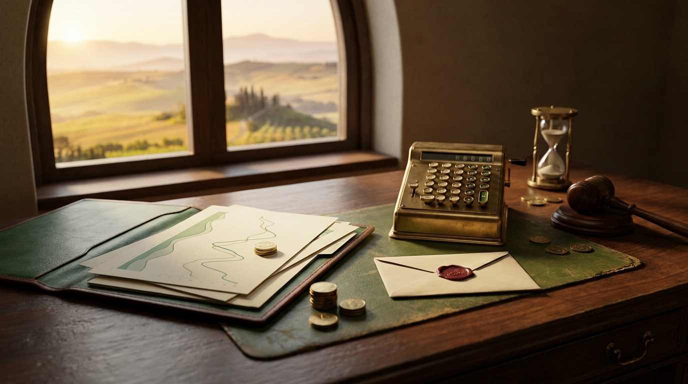

Premi di produttività in welfare: il regime fiscale 2025
La conversione dei premi di produttività in welfare aziendale resta tra gli strumenti retributivi più discussi. Tra imposta sostitutiva sulla quota in denaro e soglie di esenzione del welfare, gli istituti in gioco sono diversi e vanno tenuti distinti. La legge di Bilancio 2025 conferma il quadro agevolato, ma richiede attenzione su tetti e requisiti reddituali.

Premi di produttività e welfare aziendale: il regime 2025
Il tema dei premi di produttività è regolato, nel suo impianto base, dall'art. 1, commi 182 ss., della L. 208/2015 (legge di Stabilità 2016). Su quel telaio si innestano gli interventi delle manovre successive, fino alla L. 207/2024 (legge di Bilancio 2025).
Il meccanismo prevede due binari, da non confondere. Il primo riguarda la quota monetaria del premio, assoggettata a un'imposta sostitutiva dell'IRPEF e delle addizionali in luogo della tassazione ordinaria. Il secondo riguarda la conversione del premio in welfare, che attiva il regime di esenzione previsto dall'art. 51, commi 2 e 3, del TUIR (DPR 917/1986).
Imposta sostitutiva sulla quota monetaria
L'imposta sostitutiva ordinaria sui premi di produttività è fissata al 10%. Per il triennio 2025-2027 la L. 207/2024 (art. 1, comma 385) ha confermato la riduzione di tale aliquota al 5%, già operante negli anni precedenti.
Il premio agevolabile è soggetto a un tetto annuo di 3.000 euro (elevabile a 4.000 euro in presenza di coinvolgimento paritetico dei lavoratori per accordi anteriori al 2016). L'accesso al regime è inoltre subordinato a un limite di reddito da lavoro dipendente nell'anno precedente non superiore a 80.000 euro.
Due requisiti restano centrali: la natura incrementale degli obiettivi (di produttività, redditività, qualità, efficienza o innovazione) misurati con criteri oggettivi, e la presenza di un contratto collettivo aziendale o territoriale depositato presso l'Ispettorato del Lavoro.
La conversione in welfare
Quando il lavoratore sceglie di convertire il premio in beni e servizi di welfare, la quota convertita non concorre alla formazione del reddito, nei limiti di esenzione fissati dall'art. 51, commi 2 e 3, del TUIR. La conversione, in altri termini, può azzerare il prelievo sulla parte trasformata, in luogo dell'imposta sostitutiva applicata alla parte in denaro.
Qui occorre distinguere ulteriormente. I limiti di esenzione dei singoli benefit (previdenza complementare, assistenza sanitaria integrativa, istruzione, servizi alla persona, fringe benefit) hanno soglie proprie, fissate dall'art. 51 TUIR e dalle previsioni temporanee sulle soglie dei fringe benefit. Vanno verificate voce per voce, perché non sono uniformi.
Le cifre puntuali e l'eventuale evoluzione delle soglie dei fringe benefit per il 2025 vanno riscontrate sul testo aggiornato della L. 207/2024 e sulla prassi dell'Agenzia delle Entrate di riferimento, da identificare per atto e data prima di farne uso operativo.
Implicazioni pratiche
Per l'azienda, la scelta tra erogazione in denaro e conversione in welfare non è neutra né uniforme: incide sul costo del lavoro, sul carico fiscale del dipendente e sull'onere documentale. Per il lavoratore, la conversione può risultare più conveniente sul piano fiscale, ma sottrae liquidità immediata.
Il punto critico resta la tracciabilità: l'incrementalità degli obiettivi deve poter essere dimostrata con dati oggettivi e periodi di confronto definiti. In sede di verifica, l'assenza di parametri misurabili è la causa più frequente di disconoscimento dell'agevolazione.
Cosa fare in concreto
- Verificare la sussistenza di un contratto collettivo aziendale o territoriale che istituisca il premio e depositarlo presso l'Ispettorato territoriale del Lavoro.
- Definire obiettivi incrementali con indicatori oggettivi e periodi di riferimento misurabili, conservando la documentazione di calcolo.
- Controllare per ciascun dipendente il limite reddituale di 80.000 euro nell'anno precedente e il tetto di 3.000 euro sul premio agevolabile.
- Distinguere in busta paga e nei piani welfare la quota monetaria soggetta a imposta sostitutiva dalla quota convertita esente.
- Riscontrare sul testo vigente della L. 207/2024 e sulla prassi dell'Agenzia delle Entrate le soglie dei singoli benefit prima di formalizzare i piani.
Disclaimer
Contributo informativo a cura di Tamburro & Partners - Avv. Giuseppe Tamburro. Non costituisce parere legale.
Ogni storia di lavoro ha i suoi tempi.
Se gestisci HR e vuoi un confronto su contenzioso, ispezioni o licenziamenti, scrivi allo studio. Ti rispondiamo entro un giorno lavorativo.